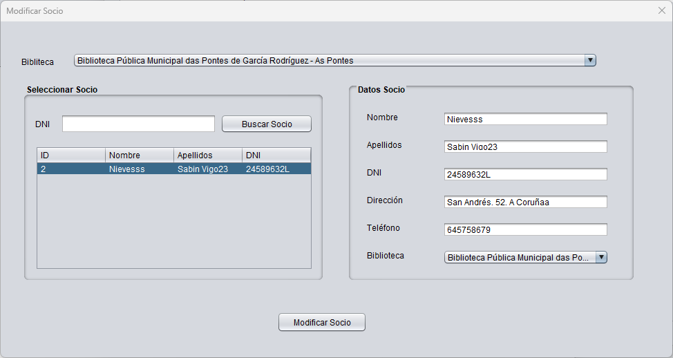

En esta ventana podremos modificar los datos de un socio.
Seleccionaremos el socio a modificar en la tabla de la izquierda, pudiendo usar el filtro por DNI.
Haciendo doble clic sobre el socio se cargaran sus datos en la parte derecha. Modificamos aquellos datos que queramos y hacemos clic en Modificar Socio.